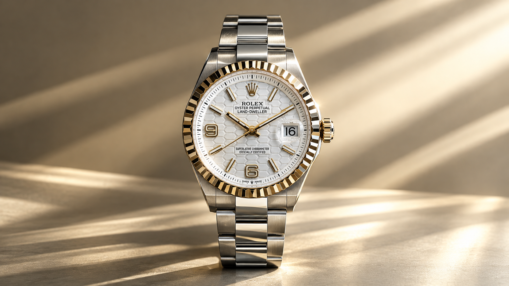
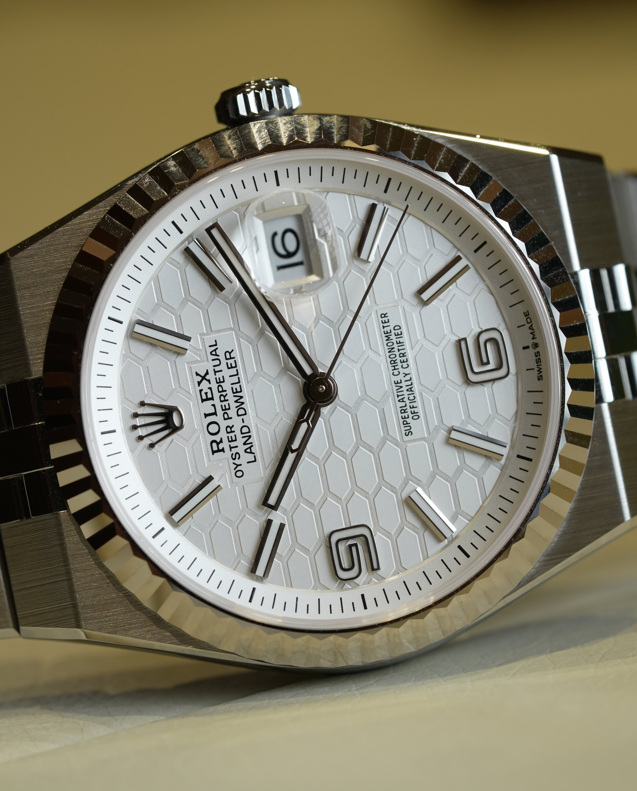

Land-Dweller
An integrated Oyster case, Flat Jubilee bracelet and honeycomb dial define a contemporary Rolex profile. Explore sourced references and calibre 7135.
A case that flows into its bracelet.
Rolex introduced the Land-Dweller in 2025. Its Flat Jubilee bracelet and high-frequency calibre 7135 anchor this family of 36 mm and 40 mm references.
A new profile with a technical centre.
Rolex unveiled the Land-Dweller in 2025. The case and Flat Jubilee bracelet form a continuous integrated silhouette. Model pages list 36 mm and 40 mm cases, several metals, honeycomb dial variants, and fluted or diamond-set bezels.
Calibre 7135 is described by Rolex as a high-frequency movement beating at 5 Hz (36,000 vibrations per hour) and using the Dynapulse escapement. The family is specified to 100 m water resistance and approximately 66 hours of power reserve.

Current references and configurations
Each reference card links to a local attributed detail and the exact official Rolex model route. Cards are text-led: no unverified imagery is used as a functioning configuration.
Integrated bracelet, revisited.
Rolex's Oyster Story places the Land-Dweller in a longer exploration of integrated-bracelet watches. The company traces earlier design work through its quartz watch of 1969 and the Datejust reference 1630 of 1974, before the new family appeared in 2025.
This project page is an independent reference guide. Rolex names, models, histories and technical descriptions remain attributed to Rolex. Venturo does not manufacture, certify, stock or sell Rolex watches.
Read Rolex's design history ↗Reference tools
Rolex Land-Dweller family reference content · checked 10 October 2026. No Venturo manufacture, stock, price or retail offer is represented.